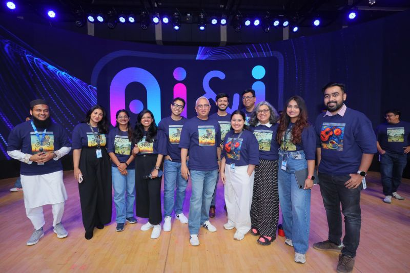
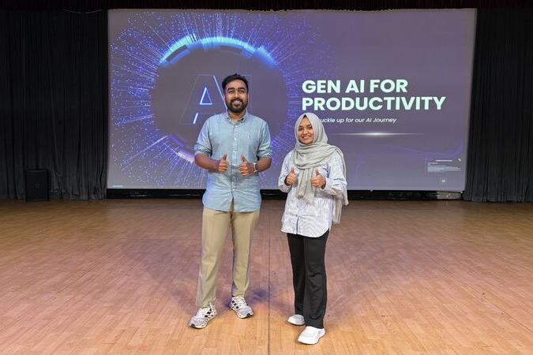
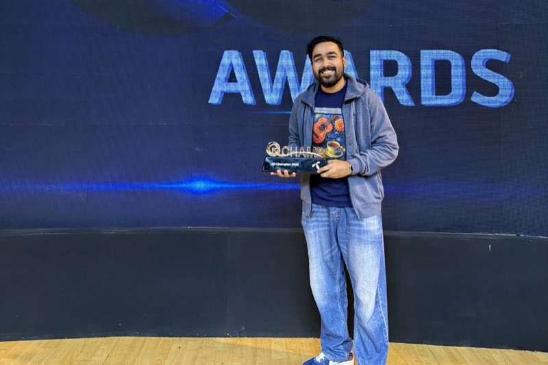

AI&I: a company-wide programme to get every employee using AI
One of Grameenphone's most important initiatives: a change programme, championed by the CEO, to make AI understandable, relevant and usable for all 1,300 employees. I was a core member.
- Scale
- The whole company, 1,300+ employees across ten divisions
- Shape
- A townhall to announce it, learning programmes for everyone, and an Ideathon competition
- My role
- Core member
- Mechanisms
- Pulse Check survey, three-tier learning architecture, hands-on workshops, an Ideathon with two-stage evaluation and Responsible AI checks
The problem
AI was a specialist subject. Most employees had little grounding in it, some were wary of it, and few could see what it had to do with their own job. The programme set out to change that for everyone, not only the technical teams. At its launch the CEO called it "our boldest transformation program yet".
What we built
Three parts, in the order employees met them.
- Townhall
A company-wide townhall, led by the CEO, announced the programme. It set out why AI mattered to everyone's job, showed AI already at work inside the company, and announced training for every employee and a competition for their ideas.
AI Townhall, July 2025, built on three pillars: empowerment, reinvention and inclusion. A Pulse Check survey beforehand asked where people stood with AI
- Learning programmes
Learning was made mandatory for every employee, online and in person. It ran in three tiers, from awareness to proficiency, with hands-on sessions where colleagues used AI tools on their own work.
Three-tier learning architecture; "GenAI for Productivity" and "From Prompts to Agents" workshops; 400+ colleagues trained in the sessions I co-developed
- Ideathon competition
A company-wide competition for AI ideas. Employees formed teams and proposed how AI could improve the work of their own division. Each division selected its strongest ideas, with AI experts helping teams work out the technical architecture and the business impact. The shortlisted teams then presented to senior leadership in a final round.
Ideathon handbook with judging criteria and Responsible AI principles; two-stage evaluation (divisional selection, then the final); five AI experts across ten divisions; shortlisted ideas later assessed for impact, implementation complexity, cost and build model
My contribution
I was a core member. I collaborated on the ideation of the initiative, co-developed the training for employees, co-authored the Ideathon framework, and judged ideas from Finance and HR alongside the Finance and HR leaders.
- Ideation. I worked with the core team on the shape of the programme: its storyline, and how the townhall, the learning and the Ideathon would connect.
- Training. I co-developed the training for employees and facilitated hands-on sessions. 400+ colleagues were trained in them.
- The Ideathon framework. I co-authored the framework: how ideas were submitted, supported and judged, in two stages, with Responsible AI checks.
- Judging. I judged the ideas from Finance and HR alongside the leaders of those two divisions.
AI&I belonged to the whole company and was championed by the CEO. The programme's results belong to the programme.
How it was assessed
People's starting point was measured with the Pulse Check. Ideas were judged in two stages, and shortlisted ideas were then assessed for impact, implementation complexity, cost and how to build them.
In public



The programme was announced in the CEO's launch post, which thanks the core team (July 2025).
What's next
The agents I later worked on for Finance and HR, such as the tax assistant, answered demand that the programme brought to the surface. The second Ideathon moves from ideas to prototypes.